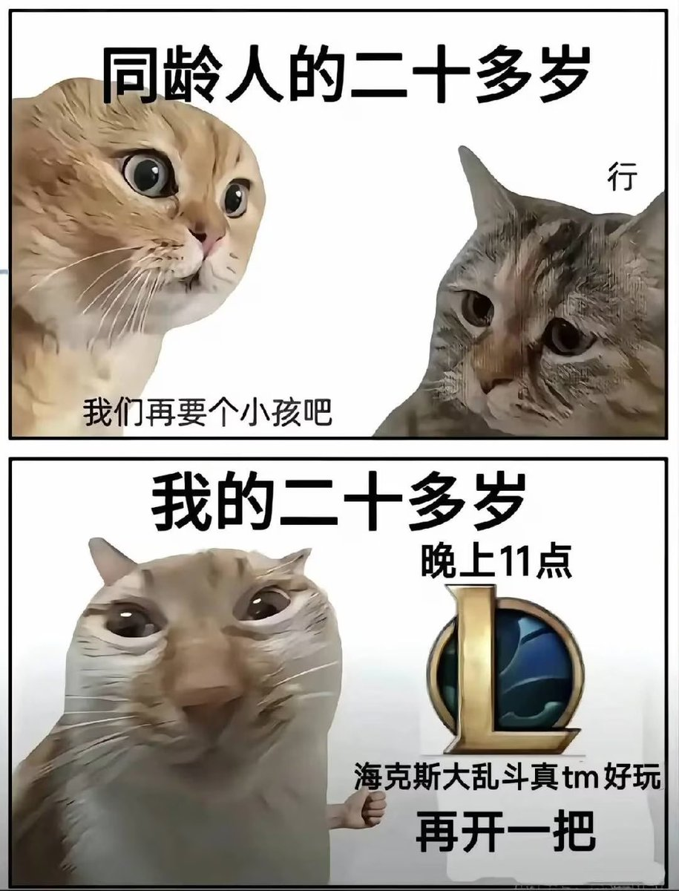

你打开小红书，搜索女性主义、情绪价值、原生家庭、父权制、结构性压迫、躯体化、边缘化、亲密关系、容貌焦虑、服美役、媚男、雌竞、雄竞、话语权、主体性、信息茧房、向下兼容、向上社交、下沉市场、自我赋能显化、解构、沉没成本，配得感、内核稳定、敌方坐骑、二手子宫、婚礼、彩礼、ptsd、npd、ad、pua、bro、incel、trigger 、badyshame、crush、星座、塔罗、水晶、转运、祛魅、磁场、I人E人、氛围感、智性恋、发疯文学、短择、越努力越幸运、我在叉叉很想你、家人们谁懂啊、子弹正中眉心、抱抱你感觉你要醉掉了、刷完你就会有一种世界即将毁灭的感觉，而由于你刚才看完这些话题里的内容，你又会觉得这个世界，干脆毁灭掉算了。
